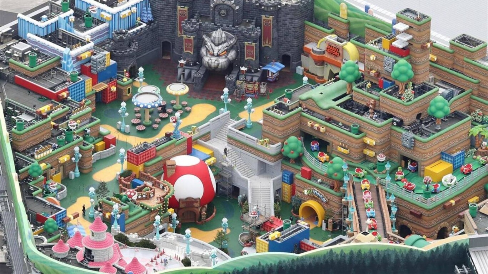

La construcción de un parque de atracciones con decoración y atracciones inspiradas en los videojuegos clásicos de Nintendo, llamado Super Nintendo World, se anunció en 2019. Y parece ser que este emplazamiento que estará en los Universal Studios de Japón ya está acabado, por lo que se ve en unas imágenes aéreas que ha difundido el medio nipón The Sankei News. El resultado es increíblemente parecido a los diseños previos, hasta tal punto que las fotos parecen infografías. En estas imágenes se pueden ver las instalaciones por fuera, dado que obviamente aún no se conoce el funcionamiento ni aspecto interior del parque. La entrada al recinto se efectúa por el castillo de Peach, que da pie a un abigarrado mundo típico de Mario donde destacan, sin duda, las zonas casi superpuestas al estilo de un mapa de un mundo de Mario clásico, y el castillo de Bowser, gris e imponente, al fondo. Y aparte de eso, por supuesto, tuberías que imaginamos que atravesarán el parque, la casa de Toad, un montón de setas y senderos que serpentean por este mundo de una Nintendo más Disney que nunca. La apertura del parque se iba a producir durante los Juegos Olímpicos de Tokyo 2020, pero al ser pospuesto el evento deportivo por el coronavirus también lo ha sido la apertura del parque. La nueva fecha prevista es primavera del año que viene.
